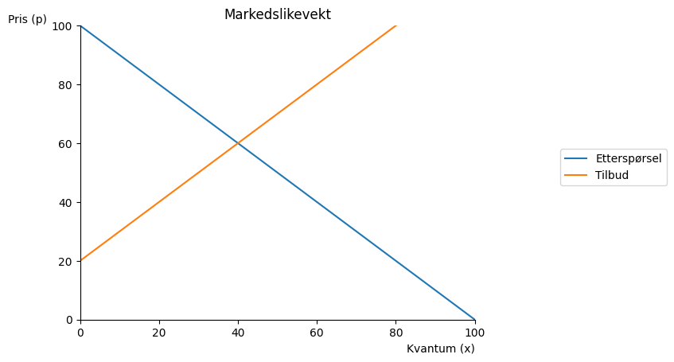
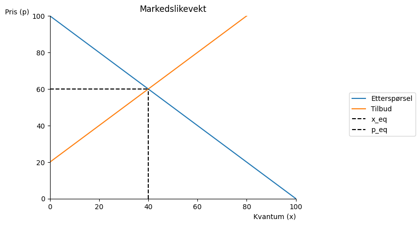
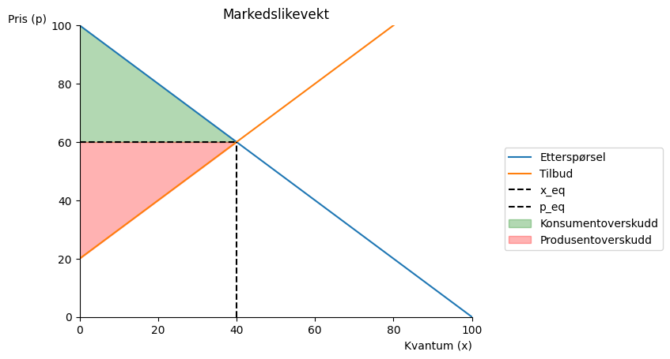

Kapittel 9 - Markededsteori, samfunnsøkonomisk effektivitet#
Markedslikevekt ved frikonkurrasne#
Vi setter opp tilbud og etterspørsel, finner likevekten, og tegner likevekten i en figur. Dette er likevekt under frikonkurranse.
import sympy as sp
import numpy as np
from matplotlib import pyplot as plt
def demand(x):
return (100 - x)
def supply(x):
return 20 + x
x=sp.symbols('x', real=True, positive=True)
equ=sp.Eq(demand(x),supply(x))
equ
x_eq=sp.solve(equ,x)
x_eq[0]
# Lagrer bare løsningen som et tall
x_eq=float(x_eq[0])
x_eq
40.0
p_eq=demand(x_eq)
p_eq
60.0
x_num=np.linspace(0.1,100,100)
#lag en akse
def create_ax():
fig, ax = plt.subplots()
ax.set_ylabel('Pris (p)', loc='top', rotation = 0)
ax.set_xlabel('Kvantum (x)', loc='right')
ax.set(xlim=(0,100))
ax.set(ylim=(0,100))
ax.spines['top'].set_color('none')
ax.spines['right'].set_color('none')
return fig, ax
fig, ax = create_ax()
# plott funksjonen
ax.plot(x_num, demand(x_num), label='Etterspørsel')
ax.plot(x_num, supply(x_num), label='Tilbud')
# tittel
ax.set_title('Markedslikevekt')
#vis navnene:
ax.legend(bbox_to_anchor=(1.5,0.6));

Vi tegner inn likevektspris og -kvantum.#
q = np.linspace(0,x_eq,100)
ax.vlines(x_eq,0,demand(x_eq), color='black',ls='dashed', label='x_eq')
ax.hlines(p_eq,0,x_eq, color='black',ls='dashed', label='p_eq')
ax.legend(bbox_to_anchor=(1.5,0.6))
fig

Den vertikale avstanden mellom etterspørselskurven og likevektsprisen er forskjellen i hva konsumenter er villig til å betale for hver ekstra enhet og hva de faktisk må betale. Dette er et overskudd til konsumenten, og kan summeres over alle enheter kjøpt. Dette gir oss konsumentoverskuddet som det grønne området nedenfor.
Den vertikale avstanden mellom likevektsprisen og tilbudskurven viser et overskudd for produsentene ettersom tilbudskurven angir deres grensekostnad. Det røde området i figuren nedenfor angir produsentoverskuddet. Både KO og PO er målt i pengeenheter, og summen utgjør samfunnsøkonomisk overskudd (SO = KO+PO).
ax.fill_between(q,p_eq,demand(q), color = "green",alpha = 0.3,label='Konsumentoverskudd')
ax.fill_between(q,supply(q),p_eq, color = "red",alpha = 0.3,label='Produsentoverskudd')
ax.legend(bbox_to_anchor=(1.5,0.6))
fig

producer_surplus=sp.integrate(p_eq-supply(x),(x,0,x_eq))
producer_surplus
consumer_surplus=sp.integrate(demand(x)-p_eq,(x,0,x_eq))
consumer_surplus
welfare_surplus=float(sp.integrate(demand(x)-supply(x),(x,0,x_eq)))
welfare_surplus
1600.0
import pandas as pd
df = pd.DataFrame({
'Overskudd': ['Solgt mengde', 'Pris', 'Konsumentoverskudd', 'Produsentoverskudd', 'Samfunnsøkonomisk overskudd'],
'Verdi (kr)': [np.round(float(x_eq), 2),
np.round(float(p_eq), 2),
np.round(float(consumer_surplus), 2),
np.round(float(producer_surplus), 2),
np.round(float(welfare_surplus), 2)]
})
display(df)
| Overskudd | Verdi (kr) | |
|---|---|---|
| 0 | Solgt mengde | 40.0 |
| 1 | Pris | 60.0 |
| 2 | Konsumentoverskudd | 800.0 |
| 3 | Produsentoverskudd | 800.0 |
| 4 | Samfunnsøkonomisk overskudd | 1600.0 |
9.1 Krig på Kontinentet, høyere strømpriser og samfunnsøkonomisk overskudd#
Conrad leser i avisen om krigen i Ukraina og at bortfallet av russisk gass har gjort at strømprisen på Kontinentet har gått opp. Han tenker at prisøkningen ikke kan være samfunnsøkonomisk effektivt.
Se for deg en situasjon hvor etterspørselen etter strøm er gitt ved:
Mens tilbudet er gitt ved:
Før krigen i Ukraina så var \(\gamma_{fred} = 0\), men med stansen av gassleveransene fra Russland, får vi et skift i tilbudskurven, gitt ved \(\gamma_{krig} = 0.2\).
a. Hva blir likevekten og det samfunnsøkonomiske overskuddet i dette markedet før krigen?
#
b. Hvordan påvirker krigen likevekten og det samfunnsøkonomiske overskuddet? Er du enig med Conrad at det har oppstått et effektivitetstap?
#
c. Conrad tenker at når krigen er over og vi igjen går tilbake til \(\gamma_{fred} = 0\), så vil det samfunnsøkonomiske overskuddet øke, og med det også den samfunnsøkonomiske effektiviteten. Har han rett i det?
#